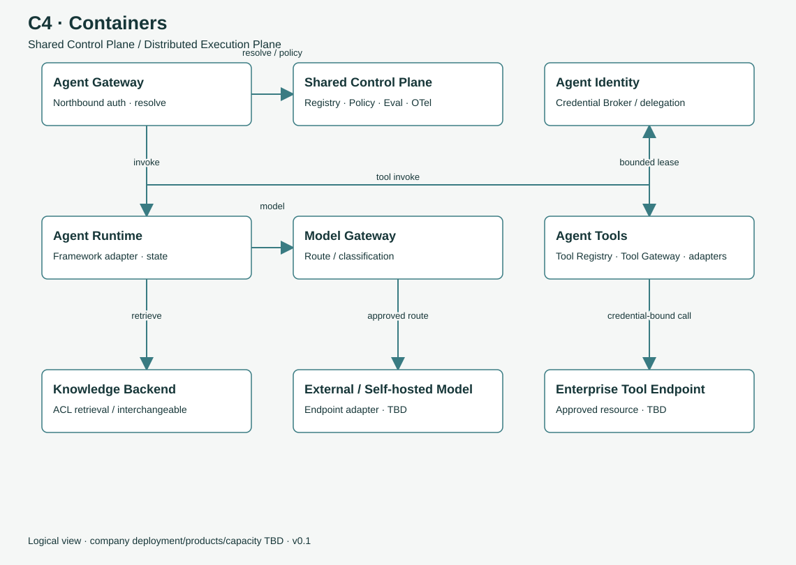

청구서 Agent의 하루: Core Systems 지도
개발자 가이드 문서입니다. 규범은 Core Systems와 아키텍처 기술 표준 문서가 기준입니다.
플랫폼은 10개의 Core System으로 이루어져 있습니다. 이름 열 개를 외우기 전에, 요청 하나가 그 열 개를 지나가는 모습을 먼저 봅니다. 이 가이드 전체가 같은 이야기 하나를 따라갑니다.
등장인물과 Agent
| 누구 | 역할 | 하는 일 |
|---|---|---|
| 민준 | 재무팀 Agent 개발자 | Agent를 만들고, 등록하고, 고장 원인을 찾고, 고칩니다 |
| 서연 | 재무팀 담당자(사용자) | 업무 앱에서 Agent에게 일을 시킵니다 |
| 지훈 | 재무팀장 | 메일 발송과 프로덕션 승격을 승인합니다. 승인자가 누구인지는 회사가 정하며 여기서는 예시 역할입니다 |
| 하준 | 인턴 | 권한이 모자란 사용자입니다. 실패 사례에만 나옵니다 |
Agent는 둘입니다. invoice-summary는 ERP에서 청구서를 읽어 요약합니다. invoice-mailer는 그 요약을 거래처 담당자에게 메일로 보냅니다. 읽기만 하는 일과 바깥을 바꾸는 일을 다른 Agent로 나눴습니다.
청구서 Agent의 하루
장면은 열한 개이고 장면마다 Core System 하나가 주인공입니다. 각 장면을 누르면 그 장으로 갑니다. 전부 읽는 데 80분쯤 걸립니다.
- ① 부른다Agent Platform APIs
- ② 어떻게 여기 있나Agent Factory
- ③ 실행된다Agent Runtime
- ④ ERP를 읽고 메일을 보내려 한다Agent Tools
- ⑤ 누구 권한으로Agent Identity
- ⑥ 모델에 묻는다Agent Gateway
- ⑦ 함정을 만난다Guardrails
- ⑧ 답이 틀렸다Agent Observability
- ⑨ 점수를 매긴다Agent Evaluation
- ⑩ 고쳐서 다시 올린다Agent Tuning · 수명주기
- ⑪ 어디서 이 일을 하나AI Platform Applications
이야기를 꿰는 고장은 하나입니다. 번호로만 시험한 Agent가 거래처 이름으로 묻는 질문에서 틀렸고(⑧), 시험지를 고쳐 그 사실을 숫자로 확인했고(⑨), 원인을 고쳐 새 버전으로 올렸습니다(⑩).
값의 표지 이 가이드의 코드와 표에는 표지가 붙어 있습니다. 실행 결과는 저장소의 코드를 실제로 돌려 얻은 값이고, 예시는 이야기를 위한 값입니다. 실행 결과에는 어디서 본 값인지도 적습니다. 앱이 받은 응답과 운영자가 안쪽에서 본 값은 다를 수 있기 때문입니다.
10개 Core System
같은 열한 장면을 블록 그림 위에 놓으면 이렇습니다. 블록의 번호가 장면 번호입니다.
Core System별 책임
개발자·운영자가 사용하는 응용 계층입니다. DevTools는 CLI·SDK·템플릿·mock, Space는 Agent 카탈로그·추적·평가·승인 조회를 위한 공유 작업 공간입니다. Space 사용은 강제하지 않습니다.
Agent Platform APIs만 호출플랫폼 기능을 노출하는 단일 API 계층이자 진입 경계입니다. 인증, Agent 해석, 테넌트 인가, 멱등성을 처리합니다.
계약: agent-gateway.openapi.json 외Agent 생성, Manifest 선언, 로컬 검증, CI 게이트, Registry 등록으로 이어지는 개발 흐름을 담당합니다.
agentctl validate · Manifest 스키마framework adapter로 Agent를 실행합니다. 하위 구성요소로 Durable 실행·상태와 Memory를 포함하며, 실행 제어 Guardrail의 집행 지점입니다.
Runtime 계약 · execution.schemaTool Registry, 도구 descriptor, REST/OpenAPI/MCP adapter, 도구 정책과 감사를 소유합니다. 도구 호출의 집행은 Agent Gateway 도구 경로가 수행합니다.
tool-descriptor.schema사용자 Identity, Agent(workload) Identity, 위임, 자격증명 중개를 담당합니다. Credential Broker를 포함합니다.
credential-broker.openapi실행 추적·지표·로그를 수집합니다. span은 OpenTelemetry GenAI semantic conventions를 따릅니다.
W3C Trace Context · OTel GenAI배포 전 평가, 실행 추적 분석, 운영 모니터링으로 품질과 안전성을 측정하고 승격 판단 근거를 제공합니다.
evaluation.schema외부 모델·도구로 나가는 반출(egress) 관문입니다. 모델 경로는 데이터 분류 기반 라우팅, 도구 경로는 승인된 endpoint와 단기 자격증명으로 호출합니다.
model-gateway · tool-gateway.openapi평가 결과와 실행 추적을 근거로 프롬프트·도구 구성·모델 선택·미세조정을 개선합니다. 결과는 새 불변 버전으로 다시 평가받습니다.
승인 요건은 생략하지 않음 계약 파일 대응 계약 파일명은 호환성을 위해 유지합니다. agent-gateway.openapi.json은 Agent Platform APIs의 Agent 호출 API이고, model-gateway.openapi.json과 tool-gateway.openapi.json은 Agent Gateway의 모델 경로와 도구 경로입니다. 코드와 감사 기록의 component 이름(agent-gateway, model-gateway)도 그대로 사용합니다.
진입 경계와 반출 경계
진입 경계와 모델 경로는 논리적으로 분리해야 합니다(MUST). 호출 통제와 모델 공급사 추상화는 서로 다른 책임이기 때문입니다. 논리적 분리이므로 물리적으로 통합 배포할 수 있으나, Identity와 데이터 반출의 신뢰 경계는 유지해야 합니다(MUST).
더 보기: 어디에 놓이나 (공통 제어 평면과 분산 실행 평면)
전사 공통으로 운영하는 제어 영역
- Registry
- Policy · Guardrail 검사
- Identity 중개
- Evaluation
- Observability
- Promotion
workload identity
Agent가 실행되는 환경
- 개발자 PC
- Mac mini · 워크스테이션
- 사내 서버
- 클라우드

Core System은 기능 관점의 구분이고, 두 평면은 배치 관점의 구분입니다. 공통 제어 평면의 Registry는 Agent·도구·모델·실행 환경의 불변 revision, artifact digest, Manifest, 평가 결과를 저장하는 구성요소이며, 이후 장에서 계속 사용됩니다. 공통 제어 평면은 Agent를 직접 실행하지 않고 실행 허가·정책·기록을 담당하며, Agent Runtime과 Agent Gateway의 실행 인스턴스는 분산 실행 평면에 배치됩니다.
등록과 승인의 구분 실행 환경의 등록(registered)은 프로덕션 승인(production-approved)과 다릅니다. 업무 트래픽을 처리하려면 별도의 승인 요건을 충족해야 합니다.
플랫폼 설계 원칙
| 영역 | 원칙 | 관련 문서 |
|---|---|---|
| 범위 | 전사 공통 플랫폼 하나를 10개 Core System으로 운영합니다 | 이 문서 |
| 인프라 | Hybrid Cloud를 전제하며, 실행 자원은 특정 서빙 제품에 종속되지 않습니다 | 이 문서 |
| 경계 | 진입은 Agent Platform APIs, 외부 모델·도구 접근은 Agent Gateway로 일원화합니다 | 이 문서 |
| 모델 | 외부 상용 LLM과 자체 호스팅 모델을 함께 사용하며, 모델 경로가 정책에 따라 선택합니다 | Agent Gateway |
| 개발 | Local-First, CLI-First로 개발하고, Agent Factory 흐름으로 선언·검증·등록합니다 | Agent Factory |
| 실행 | 공통 Runtime 계약과 framework adapter로 프레임워크와 무관하게 실행합니다 | Runtime과 Memory |
| Identity | 사용자·Agent Identity를 함께 다루고, 자격증명은 Credential Broker가 단기로 발급합니다 | Agent Identity |
| Guardrail | 공통 검사 서비스와 네 집행 지점으로 입력·출력·도구·검색·실행을 통제합니다 | 신뢰 경계와 Guardrails |
| 관측성 | OpenTelemetry GenAI 규격으로 실행 추적을 기록합니다 | Agent Observability |
| 평가 | 배포 전 평가·추적 분석·운영 모니터링 3단계로 품질과 안전성을 측정합니다 | Agent Evaluation |
| Agent 간 통신 | 공통 통신 계약을 사용하고, Registry가 서명한 A2A Agent Card로 Agent를 발견합니다 | Agent Card |
| 개선 | 평가 기반 Tuning 결과는 새 버전으로 다시 평가·승인받습니다 | Agent Tuning |
| 계약 | API 계약과 JSON Schema는 언어 중립적이며, 코드로 검증하고 버전으로 관리합니다 | 기술 표준 해석 |
주요 용어 Core Systems Agent Platform APIs Agent Gateway Agent Factory Shared Control Plane Distributed Execution Plane Registry Agent Tools Agent Identity Credential Broker
이해 점검
Q1. 업무 앱이 Agent를 호출할 때 처음 만나는 Core System은 무엇입니까?
Agent Platform APIs입니다. 인증, Agent 해석, 테넌트 인가, 멱등성 처리가 이 계층에서 수행됩니다.
Q2. Agent가 외부 모델이나 도구를 호출할 때 거치는 Core System은 무엇입니까?
Agent Gateway입니다. 모델은 모델 경로, 도구는 도구 경로를 거치며, 두 경로 모두 Guardrail 집행 지점입니다.
Q3. Tool Registry와 도구 정책은 어느 Core System이 소유합니까?
Agent Tools입니다. Agent Gateway의 도구 경로는 Agent Tools의 정의에 따라 호출을 집행합니다.
요약
- 플랫폼은 Applications, Platform APIs, Factory, Runtime, Tools, Identity, Observability, Evaluation, Gateway, Tuning의 10개 Core System으로 구성됩니다.
- 진입은 Agent Platform APIs, 외부 모델·도구 접근은 Agent Gateway로 일원화합니다.
- Core System은 기능 관점, 공통 제어 평면·분산 실행 평면은 배치 관점의 구분입니다.
근거와 참고 자료
- 업계 플랫폼의 구성요소 구분: 클라우드 Agent 플랫폼
- 모델 관문(AI Gateway) 패턴: AI Gateway